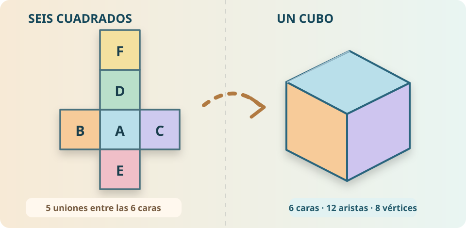

CUADERNO DE INVESTIGACIÓN
Del plano al volumen
Texto para copiar manualmente
Las notas no se envían ni se guardan en servidores. Se conservan solo mientras la página permanezca abierta; no incluyas datos personales.
LABORATORIO INTERACTIVO · PRIMARIA
Empieza con seis cuadrados, pliégalos hasta formar un cubo y descubre las relaciones entre sus caras, aristas, vértices, área y volumen.
ETAPA 1 · OBSERVAR
¿Es posible convertir estos cuadrados planos en un cubo sin cambiar su tamaño ni su forma?

DIAGRAMA DIDÁCTICO ACTUAL · NO FUENTE HISTÓRICAHAZ UNA PREDICCIÓN
Observa la figura y piensa antes de mover las bisagras de la simulación.
ETAPA 2 · PLEGAR
Controla el ángulo de plegado y examina caras, aristas y vértices desde distintas vistas.
SIMULACIÓN GEOMÉTRICA
En el desarrollo, las seis caras son cuadrados con lados iguales.
ETAPA 3 · RESOLVER
Resuelve los tres retos y comprueba las relaciones entre longitud, superficie y volumen.
RETO 1 · POSICIÓN ESPACIAL
RETO 2 · PROPORCIONALIDAD
RETO 3 · RAZONAMIENTO MÉTRICO
Modifica la longitud de la arista del cubo matemático. Compara el área de una cara, el área total y el volumen. ¿Por qué no crecen de la misma manera?
Esta medida es una variable didáctica: no modifica el archivo GLB nominal de 12 cm que se utiliza en el visor RA de la biblioteca.
ETAPA 4 · EXPLICAR
Contrasta tu hipótesis inicial con tus observaciones; justifica tus respuestas y guarda tus conclusiones.
CUADERNO DE INVESTIGACIÓN
Las notas no se envían ni se guardan en servidores. Se conservan solo mientras la página permanezca abierta; no incluyas datos personales.
Imprime el desarrollo, recórtalo por las líneas continuas y pliégalo por las discontinuas. Puedes unir las caras con cinta de papel. Compara el objeto obtenido con la simulación y, cuando la RA haya superado sus ensayos técnicos, con el cubo del visor.
Importante: el movimiento del plegado se simula mediante SVG en la pantalla; el archivo GLB de RA sigue siendo un cubo rígido, sin animación de plegado. Ninguna parte de esta actividad certifica compatibilidad de RA en dispositivos reales.
Accede al laboratorio histórico del cubo. Los diagramas proceden de una edición científica de un papiro del Egipto romano; el desarrollo plano interactivo es una propuesta moderna.